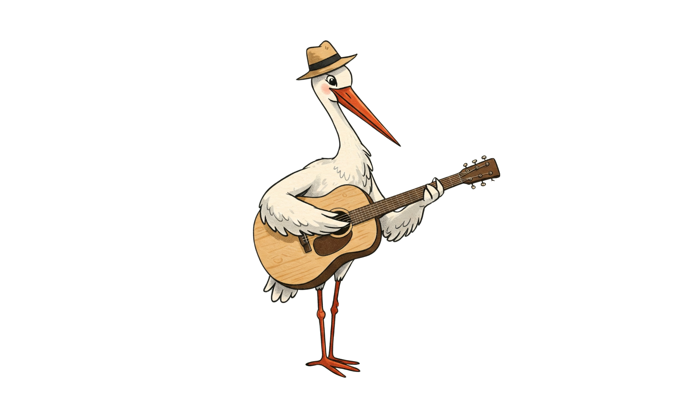

What's in a Song Name? Musical Monikers
Published: April 10, 2025
Music has this incredible power, doesn't it? A few notes can transport us back to a first kiss, a sun-drenched road trip, or a tearful goodbye. Songs become the soundtracks to our lives, weaving themselves into the fabric of our memories. So, is it any wonder that sometimes, when searching for that perfect name for a new arrival, parents find inspiration not in dusty old books, but blasting from their speakers? Naming a child after a beloved song or a character crooned about in lyrics is a trend that hits a high note for many. It’s personal, it’s often unique, and it definitely comes with a story. But before you name your little one after that chart-topper, let's take a spin through the world of song-inspired baby names – from the greatest hits to the potential B-sides.
Finding Names in Lyrics
Many iconic songs feature names that have captured the public imagination. Sometimes the character is central to the song's story, giving the name a specific vibe.
- Rhiannon: Fleetwood Mac's mystical 1975 hit brought this Welsh name, associated with a mythological goddess, into the spotlight.
- Jolene: Dolly Parton's unforgettable 1973 plea made this name synonymous with captivating beauty (and perhaps a touch of romantic rivalry).
- Valerie: Amy Winehouse's soulful cover of The Zutons' song gave this classic name a modern, retro-cool feel.
- Angie: The Rolling Stones' melancholic 1973 ballad adds a layer of wistful romance to this familiar name.
- Fernando: ABBA's epic 1976 track lends a sense of drama and history to this Spanish/Portuguese name.
- Delilah: Plain White T's "Hey There Delilah" (2006) gave this biblical name a sweet, indie-acoustic vibe.
- Roxanne: The Police's iconic 1978 hit cemented this name (meaning "dawn") in rock history.
Artist Names as Inspiration
Sometimes, the artists themselves have names that inspire.
- Lennon: After John Lennon, gaining popularity as a cool, gender-neutral first name.
- Joni: Inspired by the legendary folk singer-songwriter Joni Mitchell.
- Elvis: The King's name remains instantly recognizable and carries a rock 'n' roll swagger.
- Bowie: After David Bowie, a unique and artistic choice gaining traction.
- Aretha: The Queen of Soul's name exudes power and grace.
- Hendrix: After Jimi Hendrix, a bold choice with musical edge.
Titles and Concepts
Less commonly, the song title or a concept within the music might spark an idea.
- Harmony: A direct musical term that makes a lovely, gentle name.
- Melody: Another musical term, sweet and lyrical.
- Cadence: Refers to rhythm and flow in music (and language).
- Story: While not directly from a song, the idea of narrative in music can inspire names related to storytelling.
Things to Consider
- Song's Tone & Subject: Think about the feeling and story of the song. Is it an association you want for your child? (e.g., "Jolene" is beautiful, but the song is about pleading with a rival).
- Popularity Spike: A name featured in a massive hit might become very popular very quickly. Decide if that matters to you.
- Personal Connection: Does the song or artist hold special meaning for you or your family? This adds a lovely personal layer.
Music is deeply personal, and choosing a name inspired by a favourite song or artist can be a wonderful way to imbue your child's name with meaning and a connection to something you love. From timeless classics mentioned in lyrics to the unique names of musical legends, the soundtrack of our lives offers endless inspiration.